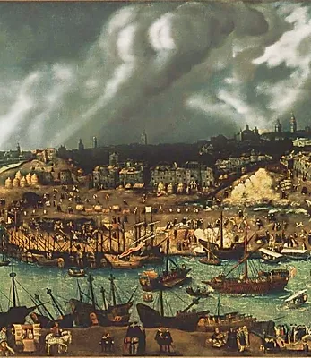
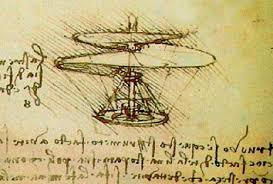

INVENTOS ENTRE 1300 Y 1750
Aquí vamos a ver una variedad de inventos en lo que sean recorrido duronte estos años entre 1300 y 1750 dando como la evolucion del ser humano.

1300 DC. Construcción de canales.
En esta época avía grandes avances en las comunicaciones y transportes. En el siglo Xlll los arquitectos/ingenieros italianos idearon grandes canales. Este periodo también se conoce por los grandes avances de la navegación y la transportación marítima.En el siglo Xlll, los arquitectos/ingenieros italianos, impulsaron el nacimiento de una era moderna, en la construcción de canales, mediante la invención de la esclusa.
Posteriormente se propago en Europa, con el fin de facilitar el traslado de aguas. Durante este periodo hubo avances en la navegación y construcción de barcos, lo que llevo a construir puertos y muelles para la transportación marítima.
La palabra esclusa significa en latín las aguas separadas: Aqua Exclusa. Las esclusas son obras de arte hidráulicas que permiten la navegación de los barcos y de unir dos partes navegables que tienen diferencia niveles. Una cámara, aislada por dos puertas, en la cual se puede hacer variar el nivel del agua, permite así a los barcos de subir un importante desnivelado del rio o canal o trabarlo.
Gutenberg primero libro impreso:
Johann Gutemberg, invento los moldes de carácter móviles y se le atribuye la impresión del primer libro. Esto permitió que se difundiera ampliamente la información, sobre muchas materias, entre ellas las ciencias y la ingeniería.
Leonardo Da Vinci 1452 – 1519

Fue un pintor florentino y político, a la vez artista, científicos, ingeniero, inventor, anatomista, escultor, arquitecto, urbanista, botánico, musico, poeta, filosofo y escritor.
Como ingeniero e inventor, Leonardo desarrollo ideas muy adelantadas en su tiempo tales como el helicóptero, el carro de combate, el submarino y el automóvil. Muy pocos de sus proyectos llegaron a construirse, puesto que la mayoría no eran realizables aún en esa época.
Leonardo Da Vinci 1452 – 1519
Nicolas Copérnico dio al mundo uno de los descubrimientos más importantes de la edad moderna: la teoría de que la tierra, junto a los demás planetas, daba vuelta alrededor del sol. Fue también el primero que proclamo que la tierra rota sobre su eje una vez cada veinticuatro horas.
Galileo Galilei 1564-1642
Fue un astrónomo, filoso, matemático y físico que estuvo relacionado estrechamente con la revolución científica. Mostró interés por casi todas las ciencias y artes (música, literatura, pintura). Sus logros incluyen la mejora del telescopio, gran variedad de observaciones astronómicas, un apoyo determinante para el copernicanismo entre otros.
Leonardo Da Vinci 1452 y 1519.
Era un gran pintor florentino y político, como ingeniero e inventor, leonardo invento varias armas como el helicóptero o el carro de combate como también el submarino y el automóvil.
Nicolas Copérnico 1473 y 1543
Fundador de la astronomía moderna, La tierra es un planeta en movimiento.
Nicolás Copérnico dio al mundo uno de los descubrimientos más importantes de la edad moderna: la teoría de que la tierra, junto a los demás planetas, daba vuelta alrededor del sol. Fue también el primero que proclamo que la tierra rota sobre su eje una vez cada veinticuatro horas.
Galileo Galilei 1564 y 1642
Fue un astrónomo, filosofo, matemático y físico que estuvo relacionado estrechamente con la revolución científica. También fue el que mejoro el telescopio, gran variedad de observaciones astronómicas.
Hooke desarrollo mejoras en los relojes péndulo.
Hooke también fue pionero en realizar investigaciones microscópicas y publico sus observaciones, entre las que se encuentra el descubrimiento de las células vegetales.
Científico y matemático inglés.
Invento el calculo diferencial e integral, descubrió los secretos de la luz y el calor y formo la ley de gravitación universal.